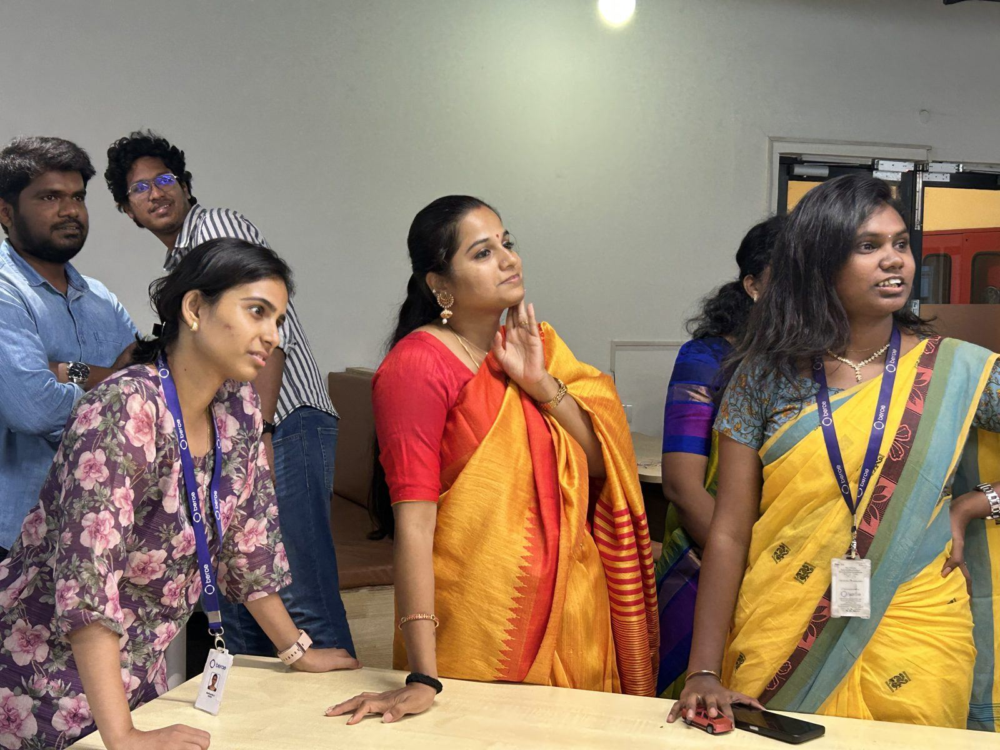
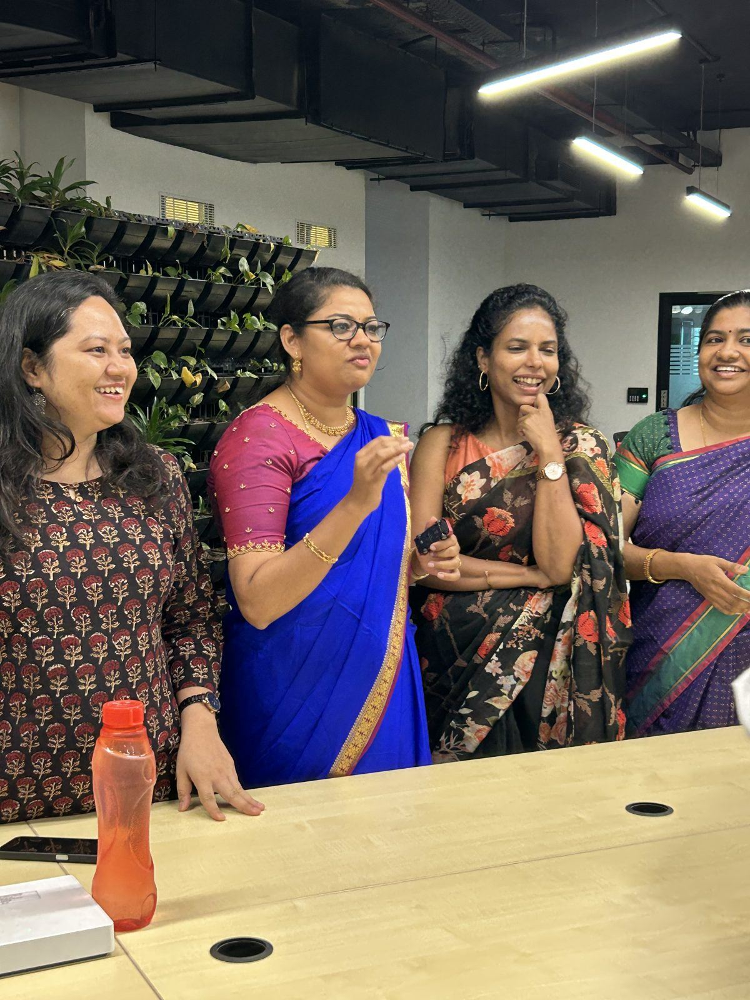
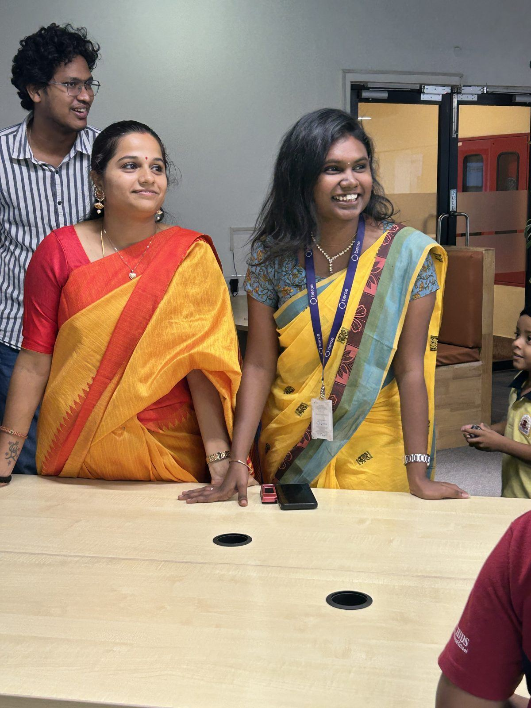
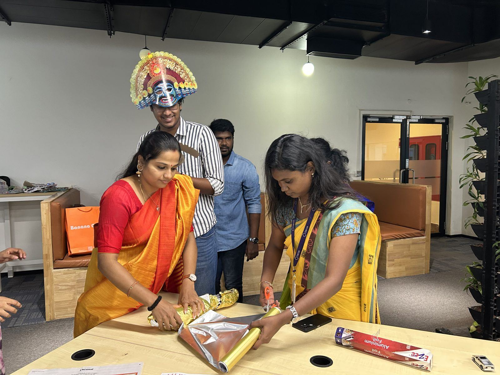

Festivals are already in your people's hearts. The question is whether they also make it into the office. At Beroe, Navratri did, and it came straight to the desks.
Bringing the festival to the floor
Navratri is nine nights of colour, music and togetherness. Beroe's people turned up in their festive best, and the office floor looked like a celebration before we had even begun. Our job was simple: give that energy a moment to become shared.
True to our engagement format, it happened right at the work bay. No one had to leave the floor, book a room or block a calendar. We walked in, the floor lit up, and then we got out of the way.

Small moments, big feelings
Look closely at these photos and you'll see what a few minutes can do. Colleagues leaning in. Hands shooting up. People who sit three bays apart, laughing at the same thing. Someone stepping out in costume and the whole room responding.
None of it is scripted. That is the point. Engagement is not about the activity. It is about what happens between people while they do it.



Why festivals matter at work
For a growing, diverse team, festivals are one of the few moments when everyone shares the same mood at the same time. Celebrated well, they say something important: you belong here, all of you, including the parts of you that aren't on your job description.
That is the Us in our I to We to Us philosophy. Not a big annual event, but a steady rhythm of shared joy that, festival by festival, builds a culture people want to be part of.
Navratri at Beroe was one stop on that rhythm. Pongal, Diwali, Christmas and a few wonderfully wacky days are the others. See the Joy Calendar.